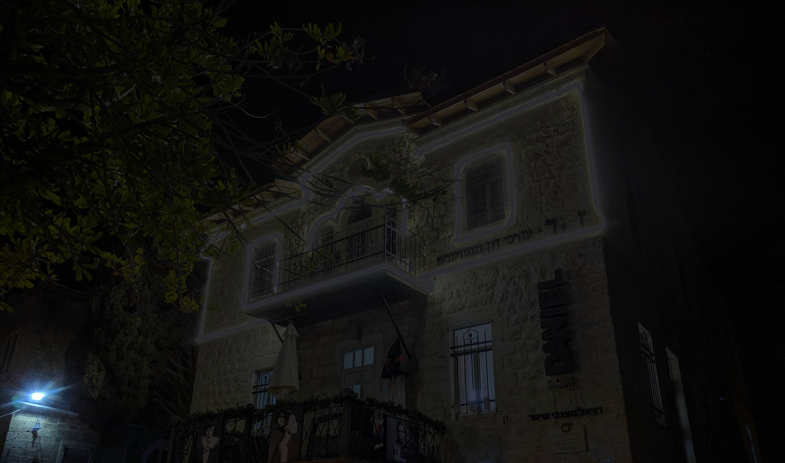
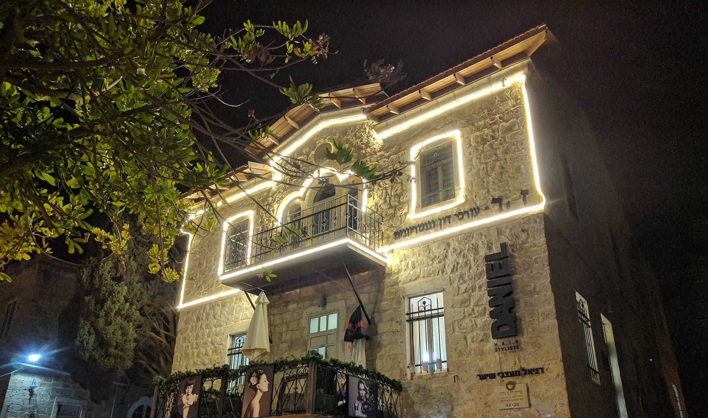
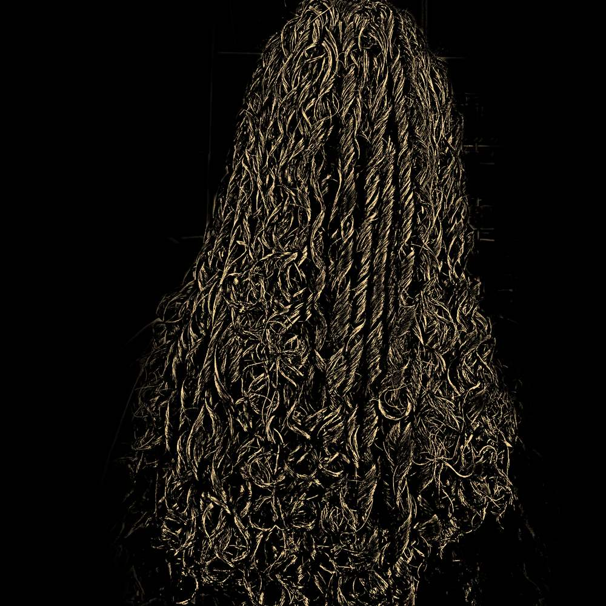
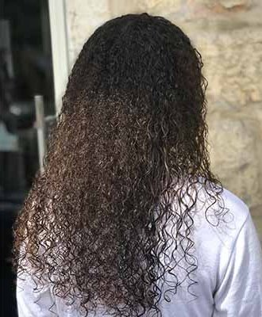
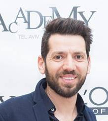
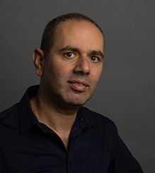

בפנים.Inside.
כיסאות, מראות ווילונות סגולים.Chairs, mirrors, violet curtains.
קונספט לדוגמה שנבנה עבור דניאל מעצבי שיער · זה אינו האתר הרשמי של העסקA sample concept built for Daniel Hair Stylists · This is not the business’s official website


קרול וכמל דניאל, בבית אבן בשדרות בן גוריון 30.Carol and Kamel Daniel, in a stone house at 30 Ben Gurion Blvd.
עבודות של המספרה. גררו כדי לסובב, הקישו כדי לפתוח.The salon’s own work. Drag to turn, tap to open.

גם שיער חלק מוזמן, כמובן.Straight hair is welcome too, of course.
עבודה של המספרה. צילום: moran vakninThe salon’s work. Photo: moran vaknin
חמש לקוחות, מהתמונות של המספרה. גררו את המסרק.Five clients, from the salon’s own photos. Drag the comb.

בניית תלתלים · מהאתר של דניאלCurl building · from Daniel’s website


״בחרנו להתמחות בתלתלים כי תמיד ראינו בתלתלים סוג של אתגר.״“We chose to specialise in curls because we always saw curls as a kind of challenge.”
כיסאות, מראות ווילונות סגולים.Chairs, mirrors, violet curtains.
פינת המומחים לתלתלים של דניאל.Daniel’s own corner for curl know-how.
hairbeauty.co.ilמתחנת הרכבת חיפה מרכז השמונה.from Haifa Center HaShmona station.
ההתמחות היא תלתלים, והדלת פתוחה לכולן.Curls are the speciality; the door is open to everyone.
״הכניסה למספרה מזמינה ונעימה, המקום מואר ומזמין באווירה של מספרות עילית בחו״ל […] ואני יוצאת מכאן ומרגישה מושלמת!״
“The entrance is inviting and pleasant, the place bright and welcoming, like the best salons abroad […] and I leave feeling perfect!”
״צוות מנצח של בעלי מקצוע סופר אדיבים […] בונים גם תלתלים, אבל בעיקר ביטחון עצמי למי שיש לו שיער בסגנון אפרו.״
“A winning team of super kind professionals […] they build curls, but above all confidence, for anyone with afro-style hair.”
״יחס נעים ומקצועי. כדאי להגיע גם מרחוק.״
“Pleasant, professional care. Worth coming from far away.”
״צוות מקצועי אדיב וחביב […] אף פעם לא דמיינתי שאחרי מקלחת השיער לא יצטרך שעה וחצי לסדר אותו.״
“A kind, friendly, professional team […] I never imagined that after a shower my hair wouldn’t need an hour and a half to style.”
״מקום מדהים, איש מקצועי ומקסים, החזיר לשיער שלי חיים, מאוד מרוצה!!״
“An amazing place, a lovely professional; he brought my hair back to life. Very happy!!”
״החוויה שלי מתחילה בשיחת טלפון למספרה […] מתחילה התייעצות מה כדאי, איזה צבע היום, אורך התספורת.״
“My visit starts with a phone call to the salon […] then a consultation: what to do, which colour today, how long the cut.”
תלוי בתלתל. כשהתלתל פתוח (סוגים 2a עד 3b), פתיחת תלתלים יכולה להוריד נפח. כשהוא סגור מאוד (3c עד 4c), מתאימה בניית תלתלים.It depends on the curl. When it is open (types 2a to 3b), loosening can take the volume down. When it is very tight (3c to 4c), curl building is the one that fits.
כן. לפני בניית תלתלים בודקים את השיער ואת הקרקפת במכשיר, ומתאימים את החומר לפי מה שרואים.Yes. Before curl building, the hair and scalp are checked with a device and the product is matched to what the check shows.
אחרי החלקה חזקה (עדיף לחכות עד שההחלקה תהיה רק בקצוות), ואחרי הבהרה.After strong straightening (better to wait until it is only in the ends), and after bleaching.
בטח. ההתמחות היא תלתלים מכל הסוגים, אבל גם שיער חלק מוזמן.Of course. The speciality is curls of every kind, but straight hair is welcome too.
שדרות בן גוריון 30, במושבה הגרמנית. בערך 8 דקות הליכה מתחנת הרכבת חיפה מרכז השמונה.30 Ben Gurion Blvd, in the German Colony. About an 8-minute walk from Haifa Center HaShmona train station.